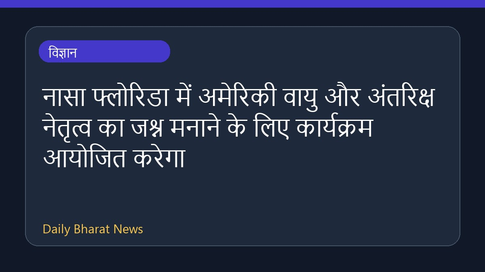
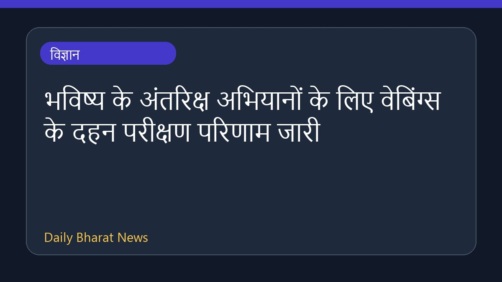

विज्ञान
विज्ञानचार दशक पहले पहली बार खोजा गया एक प्राचीन शैवाल अब नेचुरल हिस्ट्री म्यूज़ियम के संग्रह में शामिल किया जाएगा। इस दुर्लभ 'पिंक ज़ेबरा' शैवाल के रहस्य को सुलझाने में एक वैज्ञानिक ने अपना पूरा जीवन समर्पित कर दिया था। इस संबंध में मिली जानकारी के अनुसार, इस अनोखे जीव की खोज और उसकी विशेषता ने वैज्ञानिको
BBC Science · 01 Aug 2026, 05:13 AM
पूरी खबर पढ़ें → विज्ञान
विज्ञाननासा के अनुसार अगस्त 2026 में खगोल प्रेमियों के लिए कई रोमांचक घटनाएं देखने को मिलेंगी। इस महीने की मुख्य खगोलीय घटनाओं में एक सूर्य ग्रहण, साल के बेहतरीन उल्का बौछारों में से एक पर्सिड्स, शाम के आकाश में अत्यधिक चमकीला शुक्र ग्रह और महीने के अंत में एक गहरा आंशिक चंद्र ग्रहण शामिल हैं। इन सभी घटनाओ
NASA · 01 Aug 2026, 04:05 AM
पूरी खबर पढ़ें →
विज्ञाननासा एजेंसी के केनेडी स्पेस सेंटर से शुक्रवार, 14 अगस्त को दोपहर 2:30 बजे ईएसटी पर एक प्रेस कॉन्फ्रेंस आयोजित करेगा। इस कार्यक्रम में मीडिया और डिजिटल रचनाकारों को व्यक्तिगत रूप से आमंत्रित किया गया है। शटल लैंडिंग सुविधा के एक्सएलवी हैंगर में होने वाली इस घोषणा में नासा केनेडी में एक नए कार्यक्रम क
NASA · 01 Aug 2026, 02:38 AM
पूरी खबर पढ़ें → विज्ञान
विज्ञानशुक्रवार, 31 जुलाई 2026 को नासा के नेतृत्व और वर्जीनिया के सरकारी अधिकारियों ने नासा लैंगले रिसर्च सेंटर में पिछले 40 वर्षों से अधिक समय में अपनी पहली प्रमुख नई विंड टनल, फ्लाइट डायनेमिक्स रिसर्च फैसिलिटी का उद्घाटन किया। वर्जीनिया के हैम्पटन में स्थित यह अत्याधुनिक सुविधा अनुसंधान और प्रौद्योगिकी व
NASA · 01 Aug 2026, 01:49 AM
पूरी खबर पढ़ें →
विज्ञाननासा ने भविष्य के चंद्र और मंगल अभियानों में संभावित उच्च ऑक्सीजन वातावरण के लिए वाणिज्यिक वेबिंग्स के ज्वलनशीलता परीक्षण परिणामों की जानकारी दी है। परीक्षण से पता चला कि स्टर्जेस मैन्युफैक्चरिंग कंपनी की 60 प्रतिशत केवलार और 40 प्रतिशत पॉलीबेंजिमidazole से बनी प्राकृतिक वेबिंग ने नासा के मानकों के
NASA · 01 Aug 2026, 12:35 AM
पूरी खबर पढ़ें → विज्ञान
विज्ञानआगामी आर्टेमिस III मिशन की तैयारी के तहत, नासा और उसके उद्योग साझीदारों ने स्पेसएक्स के सुपर हेवी वर्जन 3 रॉकेट बूस्टर पर नए विंड टनल परीक्षण पूरे कर लिए हैं। कैलिफोर्निया में नासा के एम्स रिसर्च सेंटर में किए गए इन परीक्षणों का मुख्य उद्देश्य पुन: प्रवेश के दौरान रॉकेट को झेलनी पड़ने वाली अत्यधिक व
NASA · 01 Aug 2026, 12:09 AM
पूरी खबर पढ़ें → देश
देश